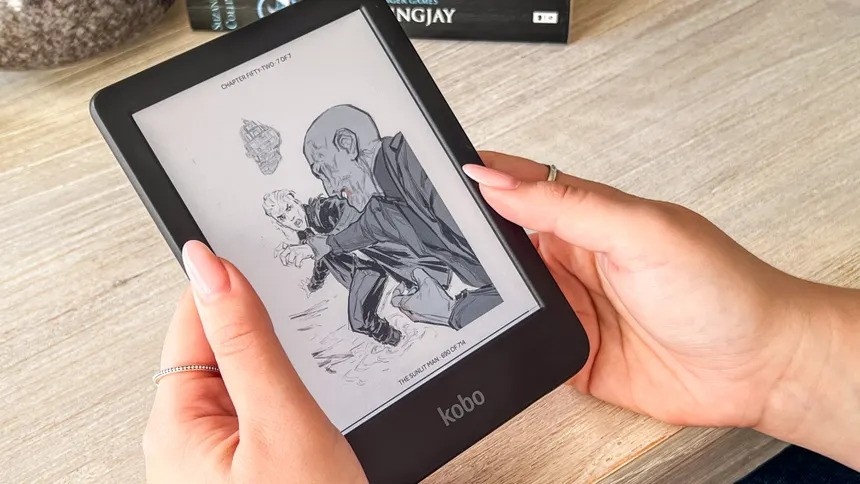
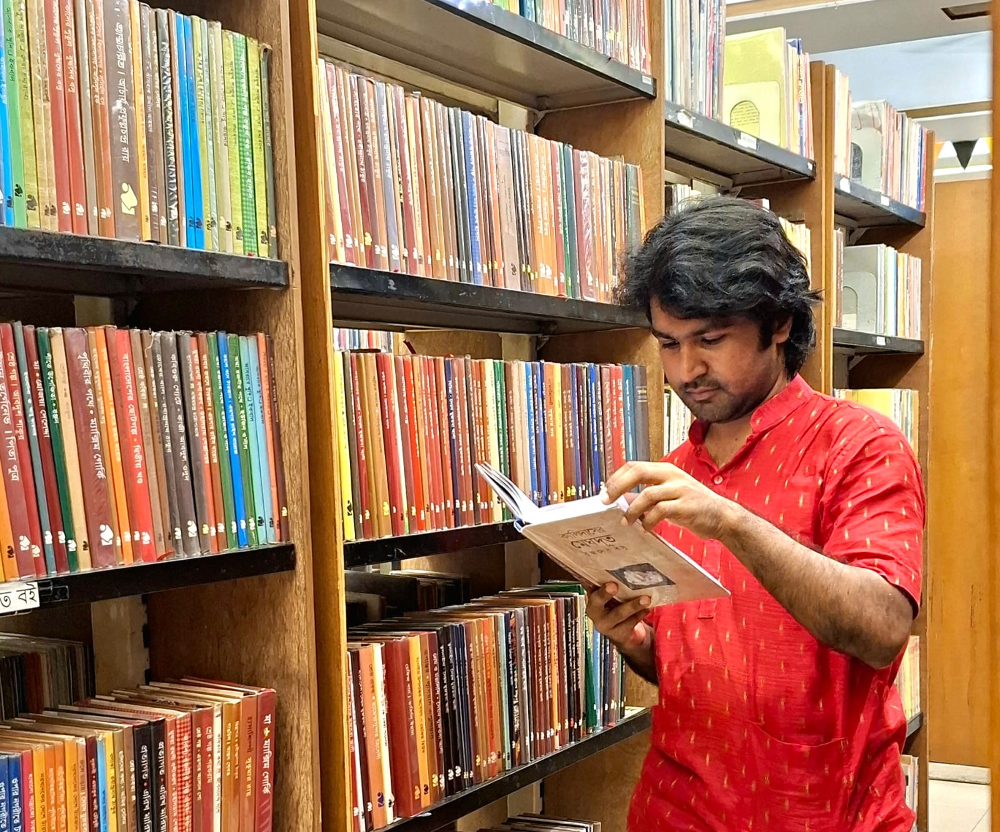

Welcome to Our Reading Research Hub
But does it matter whether that book is printed on paper or displayed on a screen?
Welcome to our investigation of one of the most debated questions in publishing and education: E-books: Is this the end of print books? This website presents our research findings on how electronic books and traditional printed books coexist in today's reading landscape.
📖 Our Research Journey
The rapid development of digital technologies has completely transformed how people access and consume information. Electronic books allow readers to access thousands of titles on devices like smartphones, tablets, and dedicated e-readers. This technological shift has sparked an ongoing debate about whether e-books will eventually replace traditional printed books.
Through our research, we've examined this question by reviewing academic literature and analyzing reader preferences across different contexts. Our findings suggest that while e-books offer clear advantages like portability and instant access, print books continue to hold significant value for deep reading, comprehension, and overall user satisfaction.
🔍 What We Discovered
Our analysis reveals something fascinating: rather than one format replacing the other, we're witnessing a coexistence where both e-books and print books serve different purposes. Research shows that readers often prefer printed books for academic learning and long-form reading due to better concentration and reduced screen fatigue. At the same time, digital libraries and mobile technology have significantly increased the popularity of e-books for convenience and portability.


📚 Key Research Areas
Throughout this website, you'll explore our findings on:
- Reader Preferences: How people choose between formats based on context and purpose
- Practical Overlap: The realistic possibility of replacing print with digital
- Reading Experience: How comprehension and retention differ between formats
- Technological Trends: The growth of digital publishing and its limitations
- Future Outlook: Why both formats will likely continue to coexist
📊 Navigate Our Research
Use the navigation menu above to explore different sections:
- 📘 Introduction: The historical context from Gutenberg to Kindle
- 📗 Discussion: Analysis of e-book growth, reader preferences, and practical overlap
- 📕 Conclusion: Our findings on coexistence and the future of reading
- 📙 References: Academic sources supporting our research
- 📔 Media Gallery: Visual and audio content about reading formats
- 📓 Feedback: Share your reading preferences with us
- 📒 About Us: Meet our research team
🎯 Why This Research Matters
Understanding the relationship between e-books and print books has important implications for various groups:
- Students and Educators: Choosing the right format for learning and retention
- Libraries: Making informed decisions about collection development
- Publishers: Understanding market trends and reader preferences
- Readers: Making choices that match their reading habits and needs
- Researchers: Building on our findings about format preference and usage
Join us as we explore the evidence and discover what the future holds for both digital and printed reading materials.